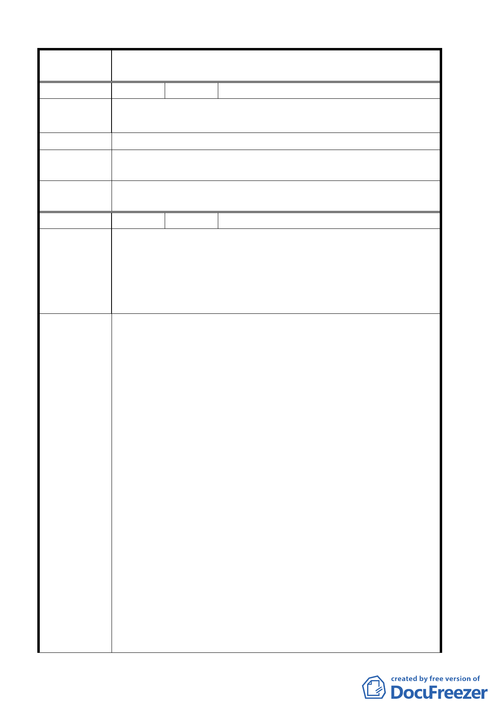

案 名 臺北市北投區都市計畫通盤檢討案（主要計畫）案
編 號 ８ 陳情人 曹永昌
陳 情 理 由 一、土地標示：北投區 振興段參小段 754 地號
二、請修正『全段』為『商業區』以利都市發展
建 議 辦 法 建議『東華街一段』修正為『商業區』(全部)
專案小組審
查結論
94.3.3 專案小組第 11 次審查會議：建議維持原都市計畫案。
委員會議
決議
同意依專案小組審查結論辦理。
編 號 ９ 陳情人 馬偕醫護管理專科學校
面積詳列，以利本校日後申請建照可資憑辦。
(三)宮五『位置欄』所列地號 506、511、512 三筆地號之謄本
陳 情 理 由 面積總面積為 126 ㎡(地號 506 面積為 27 ㎡、地號 511 面積為
41 ㎡、地號 512 面積為 58 ㎡,共計 126 ㎡),與『面積欄』所列
之 110 ㎡不符，敬請 貴局研議後修正。
一、宮四及宮五部分之新計劃內容中提及之『私立馬偕護理高
職學校用地』，因本校已於八十八年八月一日奉教育部核
准改制為『馬偕護理專科學校』在案，煩請貴局查核後
擬予變更。
二、宮四『位置欄』無相關可依循之地號可供對照，且『面積
欄』與土地謄本所列面積並不符合(新計劃之馬偕護專學
校用地為地號 532 面積 3 ㎡及地號 533 面積為 146 ㎡共
計 149 ㎡,與『面積欄』所列之 140 ㎡不符)，煩請 貴
局研議後，將土地地號及相關之(一)宮四及宮五部分之
建議辦法
新計劃內容中提及之﹃私立馬偕護理高職學校用地﹄，
因本校已於八十八年八月一日奉教育部核准改制為『馬
偕護理專科學校』在案，煩請貴局查核後擬予變更。
三、宮四『位置欄』無相關可依循之地號可供對照，且『面積
欄』與土地謄本所列面積並不符合(新計劃之馬偕護專學
校用地為地號 532 面積 3 ㎡及地號 533 面積為 146 ㎡共
計 149 ㎡,與『面積欄』所列之 140 ㎡不符)，煩請 貴
局研議後，將土地地號及相關之面積詳列，以利本校日
後申請建照可資憑辦。
四、宮五『位置欄』所列地號 506、511、512 三筆地號之謄本
面積總面積為 126 ㎡(地號 506 面積為 27 ㎡、地號 511 面
第 10 頁，共 49 頁